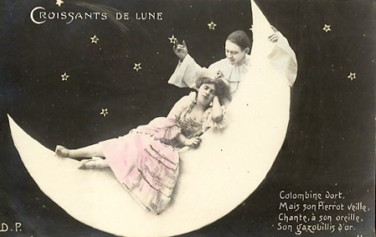

Friday, May the 14th, 2004
back to: title, date or indexes
Not just any old croissants, either:

This picture is taken from the Vintage Images section of a thoroughly recommended site called art-e-zine. Go there and browse for, oh, hours at all sorts of interesting and intriguing artwork. Here at Hooting Yard we have been inspired by the idea of making Matchbox Shrines. Currently in the works are shrines devoted to Blodwyn Pig, Ricardo Montalban, Emily Dickinson, Lamont Cranston, Gerard Manley Hopkins, Neil Sedaka, Dobson, and, of course, Yoko Ono. Pictures of these frighteningly exquisite works will be posted as soon as they're done. We are also toying with a special double-matchbox shrine devoted to Sting and Bono, which will be called All Hail The Shattered Dignity Of Messrs Sumner & Hewson. It will be splattered with some sort of goo, I expect.